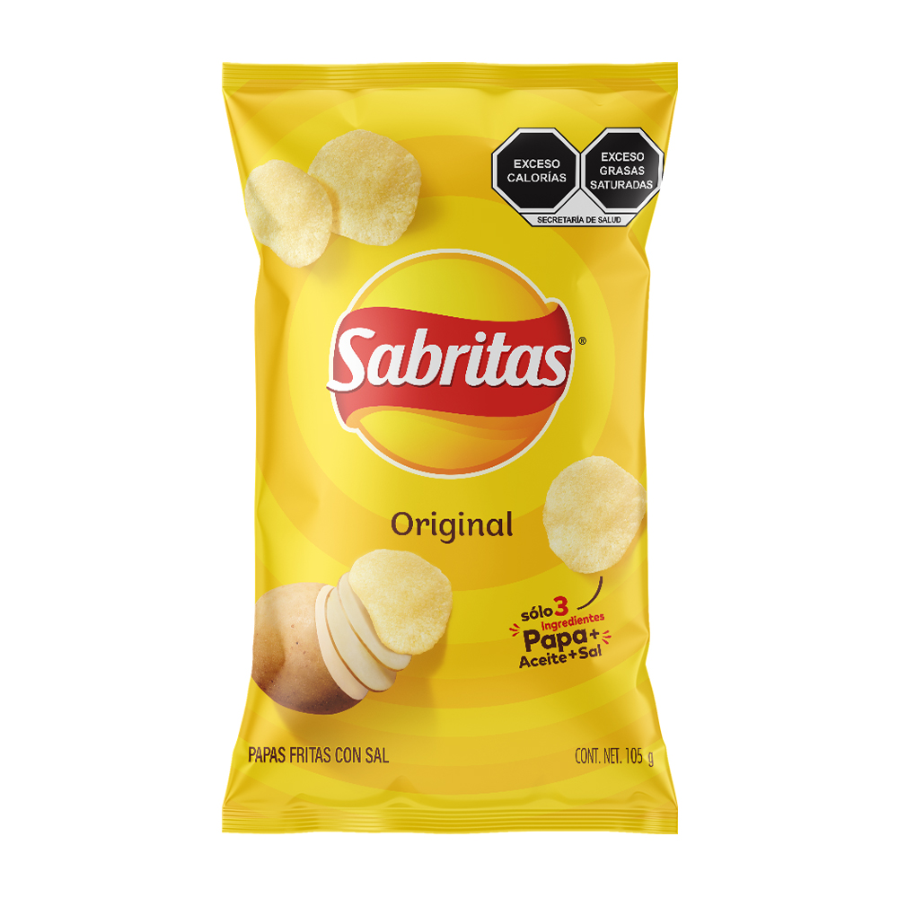

Sabritas es una empresa de botanas y frituras con orígenes mexicanos. Aunque inició como una compañía local, hace más de 50 años fue adquirida por uno de los conglomerados de alimentos más grandes de Estados Unidos..
Todas las marcas de Sabritas en México son propiedad de PepsiCo. Esta compañía extranjero arribó al país en 1966, cuando decidió comprar una distribuidora de magnitud nacional para consolidar su presencia en el mercado latinoamericano.